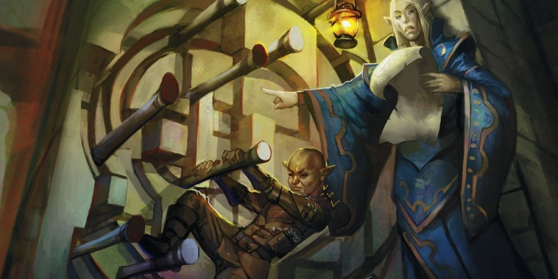

Pièges (XGtE)
Règles officielles issues du Xanathar's Guide to Everything, publiées initialement dans la rubrique Unearthed Arcana.
Les règles pour les pièges du Dungeon Master's Guide fournissent les informations de base pour gérer les pièges au cours d'une partie. Le matériel présenté ici propose une approche plus élaborée, décrit les pièges en termes de mécaniques de jeu et fournit des conseils pour créer les pièges de votre choix. De plus, plutôt que de séparer les pièges entre mécaniques ou magiques, ces règles classent les pièges dans deux autres catégories : simples et complexes.
Pièges simples
Un piège simple s'active puis devient inoffensif. Une fosse cachée creusée à l'entrée d'un repaire de gobelins, une aiguille de poison qui sort d'une serrure et une arbalète préparée pour tirer quand un intrus marche sur une plaque sont tous des pièges simples.
Décrire un piège simple
Les pièges simples nécessitent trois éléments pour fonctionner : un déclencheur, un effet une fois déclenchés et un moyen de les désamorcer. De plus, chaque piège est accompagné d'un niveau et d'une description globale de la menace qu'il représente.
Niveau et menace. Le niveau d'un piège est exprimé par une plage de niveaux pour vous donner une idée de sa puissance relative (niveaux 1-4, 5-10, 11-16 et 17-20) suivi de sa menace : modéré, dangereux ou mortel. Celle-ci vous indique quelle est la puissance du piège comparée aux autres pièges d'une même plage de niveaux.
Déclencheur. Le déclencheur d'un piège simple décrit ce qui provoque l'activation du piège. La description du déclencheur inclut la position de celui-ci et l'action qui active le piège.
Effet. L'effet d'un piège décrit ce qui se passe lorsque le déclencheur est activé. Le piège pourrait lancer une fléchette, libérer un nuage de gaz empoisonné, provoquer l'ouverture d'une trappe dérobée, et ainsi de suite. L'effet spécifie qui le piège cible, son bonus à l'attaque ou le DD du jet de sauvegarde, et ce qui se passe en cas de réussite ou d'échec à celui-ci.
Désactivation. Un piège peut être désamorcé de plusieurs façons. Cette section de la description d'un piège indique les jets ou les sorts qui peuvent le détecter ou le désactiver. Il spécifie également ce qui se passe en cas d'échec lors d'une tentative de désamorçage.
Jouer avec un piège simple
Lorsque vous devez gérer un piège simple en jeu, commencez par noter les valeurs de Sagesse (Perception) passive des personnages. La plupart des pièges permettent un jet de Sagesse (Perception) pour détecter les déclencheurs ou d'autres éléments qui donneraient des indices sur leur présence. Si vous arrêtez de demander des jets, les joueurs pourraient suspecter un danger caché. Lorsqu'un piège se déclenche, son effet s'applique comme indiqué dans sa description. Soyez sûr de ce que les joueurs veulent faire avant qu'un piège ne s'active afin qu'il entre en action en fonction de ce que les personnages veulent faire, et non pas lorsque les joueurs discutent de ce que leurs personnages pourraient faire.
Si les personnages découvrent un piège, soyez prêt à juger leurs idées pour le désamorcer. La description du piège n'est qu'un point de départ pour la désactivation, et non pas une définition exhaustive. Mais les joueurs doivent être précis lorsqu'ils décrivent comment ils comptent désamorcer le piège. Se contenter de lancer les dés n'est pas suffisant. Demandez aux joueurs où sont positionnés leurs personnages et les actions qu'ils entreprennent pour désamorcer le piège. Un joueur ne peut pas se contenter de dire « j'utilise les outils de voleur pour le désactiver ». C'est trop flou. Ils devraient plutôt dire quelque chose comme « J'utilise mes outils de voleur pour examiner la serrure et essayer de bloquer la fléchette empoisonnée cachée à l'intérieur ». Le pire qui puisse vous passer est d'être confus quant à la position exacte des personnages au moment du déclenchement du piège.
Par défaut, désamorcer un piège simple n'offre aucune récompense en points d'expérience. Si les personnages découvrent le piège et l'évitent ou le désamorcent, leur récompense est d'avoir déjoué cette menace. S'ils tombent par hasard dessus, ils doivent faire face aux conséquences d'une situation plus dangereuse.
Exemples de pièges simples
Voici des exemples de pièges simples que vous pouvez utiliser pour remplir vos aventures ou prendre comme modèles pour vos créations.
Piège à ours
Piège simple (niveau 1-4, menace dangereuse)
Un piège à ours ressemble à une mâchoire d’acier qui se referme brusquement lorsque l’on marche dessus, piégeant la jambe de la créature. Le piège est planté dans le sol et immobilise sa victime.
Déclencheur. Une créature qui marche sur le piège à ours l'active.
Effet. Le piège fait une attaque contre la créature qui l'active avec un bonus à l'attaque de +8 et fait 5 (1d10) dégâts perforants en cas de réussite. Cette attaque ne peut bénéficier d'un avantage ou d'un désavantage. Une créature touchée par le piège voit sa vitesse réduite à 0 et elle ne peut plus bouger jusqu'à ce qu'elle soit libérée par un jet de Force DD 15 réussi d'elle-même ou d'une créature adjacente au piège.
Désactivation. Un jet de Sagesse (Perception) DD 10 permet de le détecter. Un jet de Dextérité DD 10 avec des outils de voleur permet de le désactiver.
Arbalètes
Piège simple (niveau 1-4, menace dangereuse)
Les arbalètes sont l'un des pièges favoris des kobolds et des créatures qui comptent sur les pièges pour défendre leurs repaires. Il consiste en un fil tendu à travers un couloir et relié à une paire d’arbalètes lourdes bien dissimulées. Les arbalètes tirent dans le couloir dès que quelqu'un marche sur le fil.
Déclencheur. Une créature qui marche sur le fil déclenche le piège.
Effet. Le piège réalise deux attaques contre la créature qui l'a déclenché. Chaque attaque a un bonus à l'attaque de +8 et fait 5 (1d10) dégâts perforants en cas de réussite. Cette attaque ne peut avoir ni avantage ni désavantage.
Désactivation. Un jet de Sagesse (Perception) DD 15 révèle le fil. Un jet de Dextérité DD 15 avec des outils de voleur permet de le désactiver, mais un résultat de 5 ou moins au jet déclenche le piège.
Porte tombante
Piège simple (niveau 1-4, menace modérée)
Les personnes qui construisent des complexes souterrains, comme les mages fous à la recherche de nouvelles victimes, n’ont pas l’intention de laisser leurs visiteurs s’échapper facilement. Ce piège est diabolique car il déclenche la fermeture d’une porte à bonne distance d’une plaque de pression. La porte peut par exemple fermer l’entrée d'un donjon à plusieurs dizaines de mètres de là. Les aventuriers ne sauront pas qu’ils sont piégés jusqu'à ce qu’ils décident de retourner en ville.
Déclencheur. Une créature qui marche sur la plaque de pression déclenche le piège.
Effet. Le piège fait tomber une porte en fer du plafond, bloquant la sortie.
Désactivation. Un jet de Sagesse (Perception) DD 20 permet de détecter la plaque de pression. Un jet de Dextérité DD 20 avec des outils de voleur permet de le désactiver, mais un résultat de 5 ou moins au jet déclenche le piège.
Explosion de feu
Piège simple (niveau 5-10, menace dangereuse)
Le temple de Pyremius, un dieu du feu, est en proie à des voleurs qui cherchent à dérober les opales de feu rassemblées par les prêtres en guise d'offrandes à leur dieu. Une mosaïque sur le sol de l’entrée du sanctuaire intérieur déclenche une punition de flammes sur les intrus.
Déclencheur. Quiconque marche sur la mosaïque provoque une explosion de flammes. Les porteurs du symbole sacré de Pyremius ne déclenchent pas ce piège.
Effet. Un cône de feu de 4,50 mètres jaillit, recouvrant la plaque de pression et toute la zone autour d'elle. Chaque créature dans le cône doit effectuer un jet de sauvegarde de Dextérité DD 15, subissant 24 (7d6) dégâts de feu en cas d’échec, ou la moitié de ces dégâts en cas de réussite.
Désactivation. Un jet de Sagesse (Perception) DD 15 révèle la présence de cendres et de brûlures dans la zone couverte par le cône de feu généré par le piège. Un jet d’Intelligence (Religion) DD 15 permet à une créature de détruire le piège en détruisant une rune clé dans le dessin de la mosaïque. Mais un échec à ce jet déclenche le piège. Un sort de dissipation de la magie (DD 15) lancé avec succès sur les runes détruit le piège.
Filet
Piège simple (niveau 1-4, menace dangereuse)
Les gobelins, adeptes de l'esclavage, préfèrent utiliser des pièges qui ne blessent pas les intrus pour ensuite les faire travailler dans leurs mines ou ailleurs.
Déclencheur. Un fil tendu à travers un couloir est lié à un large filet. Si le fil est cassé, le filet tombe sur les intrus. Une cloche en fer est également activée par le fil. Elle résonne lorsque le piège s'active, alertant des gardes proches.
Effet. Un filet recouvrant une zone de 3 x 3 mètres centrée sur le fil tombe au sol au moment où la cloche sonne. Toute créature située à l’intérieur de la zone doit faire un jet de sauvegarde de Dextérité DD 15 ou être entravée. Une créature peut utiliser son action pour faire un jet de Force DD 10 pour tenter de se libérer, elle ou une autre créature piégée dans le filet. Infliger 5 points de dégâts tranchants au filet (CA 10, 20 pv) permet également de libérer une créature sans la blesser.
Désactivation. Un jet de Sagesse (Perception) DD 15 permet de révéler le fil et le filet qui le surplombe. Un jet de Dextérité DD 15 avec des outils de voleur désamorce le piège sans faire tomber le filet ou sonner la cloche. Un échec déclenche le piège.
Fosse
Piège simple (niveau 1-4, menace modérée)
Ce piège consiste en une fosse de 3 mètres de profondeur cachée sous une toile recouverte de feuilles et de branchages. Ce type de piège, utile pour bloquer l'entrée du repaire d'un monstre, a généralement des rebords étroits.
Déclencheur. Quiconque marche sur la toile peut tomber dans la fosse.
Effet. La créature qui déclenche le piège doit faire un jet de sauvegarde de Dextérité DD 10. En cas de succès, la créature se rattrape au rebord de la fosse, ou fait instinctivement un pas en arrière. Sinon, la créature tombe dans la fosse et subit 3 (1d6) dégâts contondants à cause de la chute.
Désactivation. Un jet de Sagesse (Perception) DD 10 révèle la toile. Un rebord de 30 cm autour de la fosse permet de la traverser sans tomber.
Aiguille empoisonnée
Piège simple (niveau 1-4, menace mortelle)
Une petite aiguille empoisonnée cachée dans une serrure est un moyen parfait pour décourager des voleurs de piller un trésor. Un tel piège est généralement placé dans un coffre ou sur la porte d'une salle au trésor.
Déclencheur. Quiconque essaye de crocheter ou d'ouvrir le verrou déclenche le piège.
Effet. La créature qui déclenche le piège doit faire un jet de sauvegarde de Constitution DD 20. En cas d’échec, elle prend 14 (4d6) dégâts de poison et est empoisonnée pour 10 minutes. Tant qu'elle est empoisonnée de cette manière, la créature est paralysée. En cas de réussite, la créature ne subit que la moitié de ces dégâts et n'est pas empoisonnée.
Désactivation. Un jet de Sagesse (Perception) DD 20 permet de détecter l'aiguille, mais seulement si le personnage inspecte la serrure. Un jet de Dextérité DD 20 avec des outils de voleur désactive l’aiguille, mais un résultat de 10 ou moins active le piège.
Lames faucheuses
Piège simple (niveau 5-10, menace dangereuse)
Ces lames mortelles traversent une pièce en fauchant tout sur leur passage. Un levier en bois active ce piège lorsqu'il est tiré. Les kobolds adorent ce style de piège, car il met les grandes créatures en danger.
Déclencheur. Lorsque le levier est tiré, le piège s’active.
Effet. Toutes les créatures de taille M ou supérieure dans une zone de 1,50 mètre de large sur 6 mètres de long doivent effectuer un jet de sauvegarde de Dextérité DD 15, subissant 14 (4d6) dégâts tranchants en cas d’échec, ou la moitié de ces dégâts en cas de réussite.
Désactivation. Le levier n’est pas caché. Un jet de Sagesse (Perception) DD 15 révèle des marques de raclage et des traces de sang dans la zone d'effet du piège. Un jet de Dextérité DD 15 avec des outils de voleur désactive le levier.
Sommeil des âges
Piège simple (niveau 11-16, menace mortelle)
Une plaque de pression déclenche un sort qui menace les intrus de sombrer dans un profond sommeil. Les gardiens du complexe pourront ensuite disposer des dormeurs.
Déclencheur. Marcher sur la plaque de pression déclenche ce piège.
Effet. Lorsqu'il est activé, ce piège incante un sort de sommeil centré sur la plaque de pression, en utilisant un emplacement de sort de niveau 9.
Désactivation. Un jet de Sagesse (Perception) DD 20 révèle la plaque de pression. Un jet d'intelligence (Arcanes) DD 20 fait à 1,50 mètre ou moins de la plaque de pression désactive le piège, mais un résultat de 10 ou moins le déclenche. Une dissipation de la magie (DD 19) lancée sur la plaque de pression détruit le piège.
Concevoir des pièges simples
Vous pouvez créer un piège simple en utilisant les conseils suivants. Vous pouvez également adapter les exemples de pièges en modifiant les DD et les valeurs des dégâts en fonction du niveau et de la menace voulus pour le piège.
Objectif
Avant de plonger dans les détails de votre piège, pensez à son but. Pourquoi quelqu'un a-t-il construit ce piège ? Dans quel but ? Pensez au créateur du piège, au but du créateur et à ce que le piège protège. Les pièges ont un contexte dans le monde, et ce contexte entraîne la nature et les effets du piège. Ci-dessous vous trouverez des exemples de buts pour un piège. Inspirez-vous en pour créer vos propres pièges.
Alarmer. Un piège qui alarme est conçu pour notifier que des intrus ont pénétré une zone. Cela peut provoquer une sonnerie ou activer un gong. Ce type de piège implique rarement un jet de sauvegarde.
Retarder. Ces pièges servent à ralentir les intrus, donnant aux habitants d'un donjon le temps de mettre en place leur défense ou de fuir. Une fosse cachée en est un exemple classique. Une fosse de 3 mètres de profondeur inflige généralement peu de dégâts et il est facile de s'en échapper, mais elle ralentit les intrus. Cela peut également être des murs qui s’effondrent, une herse qui tombe du plafond ou un mécanisme de verrouillage qui bloque une porte. Ces pièges, lorsqu'ils menacent directement les personnages, nécessitent généralement un jet de sauvegarde de Dextérité pour les éviter.
Retenir. Un piège qui retient tente de bloquer ses victimes sur place, les empêchant de se déplacer. Ces pièges sont surtout utiles lorsqu'ils sont combinés avec une patrouille de garde, mais dans d'anciens donjons, les gardiens pourraient avoir disparus depuis longtemps. Ces pièges nécessitent généralement un jet de sauvegarde de Force pour les éviter, mais certains ne permettent pas de jets. En plus de causer des dommages, ils empêchent également une créature de se déplacer. Un autre jet de Force réussi (utiliser le DD du jet de sauvegarde) ou des dégâts contre le piège peut le casser et libérer le captif. Ce peut être un piège à ours, une cage qui tombe d'un plafond ou un dispositif qui lance un filet.
Frapper. Ces pièges sont conçus pour éliminer les intrus. Aiguilles empoisonnées qui sont lancées quand une serrure est crochetée, explosions de feu qui remplissent une pièce, gaz toxique, et ainsi de suite. Les jets de sauvegarde, normalement de Dextérité ou de Constitution, permettent aux créatures d'éviter ou d'atténuer les effets du piège.
Niveau et mortalité
Avant de créer les effets d'un piège, pensez à son niveau et à sa mortalité. Les pièges sont divisés en quatre plages de niveaux : 1-4, 5-10, 11-16 et 17-20. La plage de niveaux d'un piège donne un point de départ pour estimer sa puissance. Pour affiner davantage la force du piège, déterminez ensuite s'il s'agit d'une menace modérée, dangereuse ou mortelle en fonction de sa plage de niveaux. Un piège modéré est peu susceptible de tuer un personnage ; c'est le type de piège le plus faible. Les pièges dangereux infligent assez de dégâts pour qu'un personnage touché nécessite ensuite des soins. Un piège mortel peut réduire une créature à 0 point de vie en un seul coup ou oblige ensuite la plupart des créatures à prendre un repos court ou long.
Consultez les tables suivantes pour les effets d'un piège. La table DD de sauvegarde et bonus à l'attaque donne des indications pour les DD des jets de sauvegarde, les DD des jets et les bonus à l'attaque. Le DD des jets est la valeur par défaut à utiliser pour tout jet qui interagit avec le piège. La table Quantité de dégâts par niveau indique les dommages typiques qu'un piège inflige à un seul personnage suivant son niveau. Utiliser des d6 pour les dégâts à la place des d10 pour les pièges qui peuvent affecter plus d'un personnage à la fois.
La table Sort équivalent par niveau indique le niveau d'emplacement de sort approprié en fonction du niveau de personnage et du danger que représente le piège. Un sort est un grand raccourci à utiliser lors de la conception d'un piège, que le piège duplique le sort (un miroir qui jette charme-personne) ou utilise ses effets (un dispositif alchimique qui explose comme une boule de feu). Notez que l'entrée Mortel pour les personnages au-dessus du niveau 17 suggère de combiner un sort de niveau 9 et un autre de niveau 5 en un seul effet. Dans ce cas, choisissez deux sorts ou combinez les effets d'un sort avec un emplacement de niveau 9 et un autre de niveau 5.
| Dangerosité du piège | DD de sauvegarde | Bonus à l'attaque |
| Modéré | 10 | +5 |
| Dangereux | 15 | +8 |
| Mortel | 20 | +12 |
| Niveau de personnage | Modéré | Dangereux | Mortel |
| 1 - 4 | 5 (1d10) | 11 (2d10) | 22 (4d10) |
| 5 - 10 | 11 (2d10) | 22 (4d10) | 55 (10d10) |
| 11 - 16 | 22 (4d10) | 55 (10d10) | 99 (18d10) |
| 17 - 20 | 55 (10d10) | 99 (18d10) | 132 (24d10) |
| Niveau de personnage | Modéré | Dangereux | Mortel |
| 1 - 4 | Sort mineur | 1 | 2 |
| 5 - 10 | 1 | 3 | 6 |
| 11 - 16 | 3 | 6 | 9 |
| 17 - 20 | 6 | 9 | 9 + 5 |
Déclencheur
Un déclencheur est une circonstance qui doit avoir lieu pour qu'un piège soit activé. Déterminez ce qui fait que le piège est activé et comment les personnages peuvent trouver le déclencheur. Voici quelques exemples de déclencheurs :
- une plaque de pression qui, lorsque l'on marche dessus, active un piège
- un fil de fer qui, quand il est cassé, active un piège, généralement quand quelqu'un marche dessus
- une poignée qui active un piège quand elle est tournée dans le mauvais sens
- une porte ou un coffre qui déclenche un piège lorsqu'il est ouvert
Un déclencheur doit généralement être caché pour être efficace. Sinon, éviter le piège sera trop facile. Un déclencheur nécessite un jet de Sagesse (Perception) si simplement le repérer révèle sa nature. Les personnages peuvent déjouer une fosse cachée par un petit filet recouvert de feuilles s'ils repèrent la fosse sous les feuilles. De même pour un fil tendu ou une plaque de pression. D'autres pièges nécessitent une inspection plus minutieuse et une déduction. Une poignée ouvre une porte lorsqu'elle est tournée vers la gauche, mais active un piège si elle est tournée vers la droite. Un tel piège nécessite un jet réussi d'Intelligence (Investigation). Le déclencheur est évident mais comprendre sa nature ne l'est pas. Le DD du jet, quel que soit son type, dépend de la compétence et du soin apporté à la dissimulation du piège. La plupart des pièges nécessitent un contrôle DD 20 pour être repérés, mais un piège mal fait ou construit à la hâte a un DD de 15. Les pièges exceptionnellement tordus pourraient avoir un DD de 25.
Vous devez alors penser à ce que les personnages apprennent lorsque le jet est réussi. Dans la plupart des cas, le jet révèle le piège. Dans d'autres cas, il permet de découvrir des indices utiles mais qui nécessitent une certaine déduction. Les personnages peuvent réussir le jet mais tout de même déclenché le piège s'ils ne parviennent pas à comprendre ce qu'ils ont appris.
Effets
Concevoir les effets d'un piège est un processus simple. Les tables pour les DD des jets de sauvegarde, les bonus à l'attaque, les dégâts, etc. donnent un point de départ pour les pièges les plus simples qui infligent des dégâts. Pour les pièges avec des effets plus complexes, le mieux est d'utiliser la table Sort équivalent par niveau pour trouver la meilleure équivalence pour l'effet prévu de votre piège. Les sorts sont une bonne base parce que ce sont des éléments de conception de jeu qui fournissent des effets spécifiques. Une fois que vous avez choisi l'effet du piège, choisissez ses dégâts, son bonus à l'attaque et le DD de ses jets de sauvegarde. Si vous utilisez un sort comme point de départ, regardez si vous avez besoin de modifier ses effets pour l'adapter à la nature du piège. Par exemple, vous pouvez facilement changer le type de dégâts d'un sort ou le jet de sauvegarde dont il a besoin.
Désarmer un piège simple
Les pièges simples nécessitent un seul jet de caractéristique pour être désarmés. Imaginez comment fonctionne le piège, puis réfléchissez à la façon dont les personnages peuvent le surmonter. Mais tous les pièges ne peuvent pas être désarmés de manière traditionnelle. Un piège à fosses caché est désarmé lorsque les personnages le remarquent. Les personnages peuvent simplement marcher autour de lui ou descendre d'un côté, le traverser, puis remonter de l'autre côté.
Une fois que vous avez déterminé comment un piège peut être désarmé, choisissez les combinaisons appropriées de compétences et de caractéristiques que les personnages peuvent utiliser. Dans la plupart des cas, un jet de Dextérité effectué avec des outils de voleur, un jet de Force (Athlétisme) ou un jet d'Intelligence (Arcanes) peut surmonter un piège. Un jet de Dextérité effectué avec des outils des voleur peut s'appliquer à tout piège qui possède un élément mécanique. Les outils des voleur peuvent être utilisés pour désactiver en toute sécurité un fil ou une plaque de pression, démonter un mécanisme d'aiguille empoisonnée ou fermer une vanne qui libère un gaz toxique dans une pièce. Les jets de Force sont utiles pour les pièges qui peuvent être détruits ou retenus par la force brute. Une lame peut être brisée, un plafond qui s'effondre maintenu en place, un filet déchiré. Les pièges magiques peuvent être désactivés par quelqu'un qui peut déterminer la magie utilisée pour les alimenter. Un jet d'Intelligence (Arcanes) permet à un personnage de comprendre comment fonctionne le piège et comment désactiver sa magie. Une statue qui lance un jet de flammes magiques peut être désactivée lorsque l'un de ses yeux de verre est brisé, rompant la magie qui la faisait fonctionner.
Enfin, décidez s'il y a des conséquences lorsqu'une tentative pour désactiver le piège échoue. Si c'est le cas, choisissez un seuil pour le résultat du jet ou décidez que tout échec active le piège. Si le résultat atteint ce seuil ou le dépasse, le piège s'active. Cette option est un outil utile pour rendre un piège dangereux même si les personnages l'ont découvert. Un piège qui peut être désactivé sans danger est comme un monstre qui ne peut pas se défendre. Bien sûr, utiliser la logique pour guider vos décisions. Cet aspect rend un piège intéressant, mais il ne doit pas faire que le jeu devienne illogique ou arbitraire. Par exemple, si votre piège est une section du sol qui se dérobe pour faire tomber les personnages dans une fosse et que le roublard qui tente de désarmer le mécanisme se trouve à côté du piège, il n'y a aucune raison pour que le roublard tombe si le piège s'active. Bien sûr, vous pouvez remédier à cela en spécifiant que le personnage doit se pencher sur le piège ou avoir un pied sur celui-ci pour pouvoir atteindre le mécanisme et le désactiver.
Placer un piège simple
Avec les pièges, tout est affaire de contexte. Si un piège qui frappe les personnages de côté est un inconvénient sur un chemin de forêt, c'est un risque potentiellement mortel sur un sentier étroit qui longe une falaise. Les passages étroits qui mènent à des endroits importants dans un donjon font un bon emplacement pour un piège, en particulier pour les pièges qui alarment ou retiennent. Ces pièges protègent les intrus avant qu'ils ne puissent atteindre un endroit critique, donnant ainsi aux habitants du lieu une chance de préparer leur défense. À l'opposé, un coffre, une porte ou toute autre barrière ou contenant qui protège ou contient un précieux trésor est l'endroit idéal pour un piège qui inflige des dégâts. Dans ce cas, le piège est la dernière ligne de défense qui peut éliminer un voleur ou un intrus. Les pièges qui alarment et ne représentent aucune menace physique directe sont idéaux pour les zones qui sont utilisées par les habitants d'un donjon. Si un gobelin trébuche et active un piège qui alarme par erreur, il n'y a pas de réel problème. L'alarme sonne, les gardiens arrivent, réprimandent le gobelin maladroit, puis réinitialise le piège. Bien sûr, un piège qui alarme qui est déclenché par accident trop souvent peut ne pas générer une réponse rapide de la part des défenseurs.
Placez donc les pièges logiquement en prenant en considération le temps et les efforts nécessaires pour les fabriquer. Si vos aventures comportent trop de pièges, le jeu va faire du surplace parce que les joueurs vont fouiller chaque mètre carré d'un souterrain à la recherche de fils et de plaques de pression. Tout est correct si les joueurs déduisent correctement la présence d'un piège. Cela signifie que votre piège a été placé logiquement et que les joueurs sont bien entrés dans le jeu.
Pièges complexes
Un piège complexe présente de multiples dangers pour les aventuriers. Une fois qu'un piège complexe s'active, il reste dangereux tour après tour jusqu'à ce que les personnages l'évite ou le désactive. Certains pièges complexes deviennent plus dangereux au fil du temps, accumulant de l'énergie ou gagnant en vitesse. Les pièges complexes sont également plus difficiles à désactiver que les pièges simples. Un seul jet ne suffit pas à en désactiver un. Au lieu de cela, plusieurs jets sont nécessaires pour désactiver un à un chaque élément. Le piège se dégrade à chaque jet, jusqu'à ce que les personnages le désactivent. Les pièges les plus complexes sont conçus de telle sorte qu'ils ne peuvent être désarmés que si vous êtes prêt à risquer les effets du piège. Par exemple, dans un couloir rempli de lames de scie, le mécanisme qui les contrôle est situé à l'opposé de l'entrée, ou une statue qui baigne une zone d'énergie nécrotique ne peut être désactivée qu'en entrant dans la zone d'énergie émise.
Décrire un piège complexe
Les pièges complexes s'appuient sur les quatre parties d'un piège simple, auxquelles s'ajoutent des éléments qui font du piège une menace plus dynamique.
Niveau et menace. Un piège complexe utilise les mêmes plages de niveaux et classement de mortalité qu'un piège simple.
Déclencheur. Tout comme un piège simple, un piège complexe possède un déclencheur. Certains pièges complexes en ont même plusieurs.
Initiative. Un piège complexe agit comme une créature. Les pièges complexes sont lents (initiative 10), rapides (initiative 20) ou très rapides (initiative 20 et 10).
Éléments actifs. Lorsque vient le tour d'un piège, celui-ci active des effets spécifiques qui sont détaillés dans sa description. Le piège peut avoir plusieurs éléments actifs, une table sur laquelle vous déterminez au hasard son effet, ou des options à choisir.
Éléments dynamiques. De nombreux pièges complexes proposent une menace qui évolue. La description du piège indique comment le piège change avec le temps. Habituellement, ces changements prennent effet à la fin de chacun de ses tours ou en réponse aux actions des personnages.
Éléments constants. Un piège complexe représente une menace même quand ce n'est pas son tour. Les éléments constants décrivent comment fonctionnent ces parties du piège. La plupart font une attaque ou obligent à un jet de sauvegarde les créatures qui finissent leur tour dans certaines zones.
Désactivation. Un piège peut être vaincu de diverses manières. La description d'un piège détaille les jets ou les sorts qui peuvent le détecter et le désactiver. Le cas échéant, il indique également ce qui se passe en cas d'échec lors de la désactivation. Désactiver un piège complexe est comme désarmer un piège simple, sauf qu'un piège complexe nécessite plus de jets. Il faut généralement trois jets réussis pour désactiver l'un des éléments d'un piège complexe. Et beaucoup de ces pièges ont des plusieurs éléments, ce qui nécessite beaucoup de travail pour désamorcer toutes les parties du piège. Habituellement, un jet réussi réduit au moins l'efficacité d'un élément du piège s'il ne le désactive pas.
Jouer avec un piège complexe
En termes de jeu, un piège complexe fonctionne comme un monstre légendaire. Lorsqu'ils sont activés, les éléments actifs du piège agissent à l'initiative 20 ou 10 (ou les deux, pour les pièges très rapides). À cette initiative, après que toutes les créatures qui ont la même initiative aient agi, les fonctionnalités du piège s'activent. Appliquer les effets détaillés dans la description du piège. Après avoir résolu les effets des éléments actifs du piège, vérifiez ses éléments dynamiques pour voir si quelque chose relatif au piège change. De nombreux pièges complexes ont des effets qui varient durant la rencontre. Une aura magique pourrait faire plus de dégâts au fur et à mesure qu'elle devient plus active, ou une lame oscillante pourrait changer la zone qu'elle attaque. Les éléments constants du piège lui permettent d'avoir des effets quand ce n'est pas le tour du piège. À la fin du tour de chaque créature, regardez les éléments constants du piège pour voir si l'un de ses effets est déclenché.
PX pour les pièges complexes
Surmonter un piège complexe donne droit à des points d'expérience, selon le danger qu'il représente. Mais juger si un groupe a surmonté un piège peut être subjectif. En règle générale, si les personnages désactivent un piège complexe ou sont exposés à ses effets et survivent, attribuez-leur des points d'expérience selon la table ci-dessous.
| Niveau du piège | PX |
| 1 - 4 | 650 |
| 5 - 10 | 3850 |
| 11 - 16 | 11 100 |
| 17 -20 | 21 500 |
Exemples de pièges complexes
Voici des exemples de pièges complexes pour inspirer vos propres créations.
Chemin de lames
Piège complexe (niveau 1-4, menace dangereuse)
Cachée au sein d'une pyramide enterrée dans la cité perdue de Cynidicea, se trouve la tombe du roi Alexandre et de la reine Zenobia. L’entrée de leur tombe est un long couloir rempli de pièges et seulement accessible via des portes secrètes astucieusement dissimulées. Le couloir est large de 6 mètres et long de 48. Il est à peu près dégagé. Après 24 mètres, le sol devient accidenté et craquelé, il doit être considéré comme un terrain difficile à partir de là.
Déclencheur. Ce piège s’active dès qu’une créature qui n'est pas du type mort-vivant entre dans le couloir, et il reste actif tant qu’une créature qui n'est pas du type mort-vivant s’y trouve.
Initiative. Le piège a une initiative de 20 et de 10.
Éléments actifs. Le chemin de lames est composé de lames tournoyantes sur les 24 premiers mètres du piège, de piliers qui viennent s’écraser au sol avant de remonter dans le plafond sur les 15 mètres suivants, et d'une rune de terreur sur les 9 derniers mètres.
Lames tournoyantes (Initiative 20). Les lames attaquent toute créature située dans les 24 premiers mètres du couloir, avec un bonus de +5 au jet d’attaque, et causent 11 (2d10) dégâts tranchants si elles touchent.
Piliers écrasants (Initiative 10). Chaque créature dans la zone des 24 à 39 mètres du couloir doit effectuer un jet de sauvegarde de Dextérité DD 15, subissant 11 (2d10) dégâts contondants et être mise à terre en cas d’échec, ou la moitié des dégâts en cas de réussite.
Rune de terreur (Initiative 10). Chaque créature dans les 9 derniers mètres du couloir doit réussir un jet de sauvegarde de Sagesse DD 15. En cas d’échec, la créature est effrayée par la rune, et doit immédiatement utiliser sa réaction pour s’éloigner à sa vitesse du bout du couloir. La créature effrayée ne peut se rapprocher du bout du couloir tant qu'elle ne réussit pas un jet de sagesse DD 15, ce qui met fin à sa condition effrayé.
Élément dynamique. Les lames et la rune deviennent de plus en plus dangereuses tant que le piège reste actif.
Accélération des lames. Les lames se déplacent de plus en plus vite, ralentissant uniquement lorsqu'elles touchent une cible. Chaque fois que les lames ratent une attaque, augmentez leur bonus à l’attaque de +2 et leurs dégâts de 3 (1d6). Ces effets persistent jusqu’à ce que la lame touche une cible.
Défense de la rune. Interférer avec la rune de terreur pour la désactiver augmente la puissance du piège. Chaque succès augmente les dégâts des lames et des piliers de 5 (1d10) et augmentent le DD du jet de sauvegarde de la rune de 1.
Éléments constants. Les lames tournoyantes et la rune de terreur affectent toutes les créatures qui finissent leur tour dans leurs zones respectives.
Lames tournoyantes. Toute créature finissant son tour dans la zone affectée par les lames est ciblée par une attaque : +5 à l'attaque et 5 (1d10) dégâts tranchants en cas de succès.
Rune de terreur. Toute créature qui finit son tour dans les 9 derniers mètres du couloir doit réussir un jet de sauvegarde contre la rune ou subir l’effet de terreur.
Désactivation. Chaque élément actif du piège offre différentes possibilités de désactivation.
Lames tournoyantes. Les personnages peuvent briser les lames, endommager leurs composants, ou étudier leur déplacement pour les éviter. Les lames sont désactivées si leur bonus total à l’attaque atteint -8 suite aux assauts ou aux tentatives de désactivations.
Intelligence (Investigation) DD 15. Ce jet révèle le parcours suivi par les lames. Par une action, une créature qui peut voir les lames peut tenter ce jet. Un succès donne un désavantage à l’attaque des lames, si la créature n’est pas incapable d'agir.
Attaque. Une créature dans la zone peut utiliser l'action Se tenir prêt pour frapper une lame. La lame obtient un avantage à son attaque pour frapper la créature, puis la créature fait son attaque. Les lames ont une CA de 15 et 15 pv. Détruire les lames réduisent leur bonus d’attaque de 2.
Jet de Dextérité avec des outils de voleur DD 15. Des créatures peuvent utiliser leurs outils dans la zone d’effet des lames pour tenter de saboter le mécanisme. Une réussite réduit le bonus à l’attaque des lames de 2.
Piliers écrasants. Il n’y a aucune moyen efficace de désactiver les piliers.
Rune de terreur. La rune peut être désactivée avec trois jets réussis d’Intelligence (Arcanes) DD 15. Chaque jet requière une action. Une créature doit être placée au bout du couloir pour tenter ce jet, et seule une créature à la fois peut le tenter. Une fois qu’une créature a tenté un jet, aucune autre créature ne peut essayer avant la fin du prochain tour de cette créature. Il est également possible de désactiver le piège en lançant trois fois avec succès le sort dissipation de la magie (DD 13) sur la rune.
Sphère de l'écrasante destinée
Piège complexe (niveau 5-10, menace mortelle)
Le bouffon de la cour a conçu un piège mortel afin d'éliminer quiconque chercherait à dérober son bonnet magique de fou du roi. La tombe du bouffon est située tout au fond d'un couloir large de 3 mètres et long de 45 mètres qui se dirige du nord vers le sud avec un fort dénivelé progressif vers le bas. L'entrée de la tombe est une porte située en bas de la pente, à l'extrémité sud du couloir. Plus précisément elle est située sur le mur est et permet de pénétrer dans le tombeau.
Déclencheur. Ce piège s'active dès que le couvercle du cercueil du bouffon est ouvert. Un portail magique s'ouvre au niveau de l'extrémité nord du couloir et vomit une sphère métallique géante qui se met à dévaler la pente. Lorsqu'elle atteint le bas de la pente, un second portail apparaît momentanément et téléporte la sphère tout en haut de la pente, la sphère recommence alors sa course effrénée.
Initiative. Le piège agit comme s'il possédait une initiative de 10 (mais consultez la rubrique élément dynamique ci-dessous).
Élément actif. Bien que le piège soit de nature complexe, il possède un seul élément actif. C'est tout ce dont il a besoin.
Sphère de l'écrasante destinée (Initiative 10). La Sphère de l'écrasante destinée est un rocher qui remplit presque tout le couloir. Toute créature se trouvant dans le couloir doit effectuer un jet de sauvegarde de Force DD 20 lorsque la sphère est activée. En cas d'échec, une créature subit 22 (4d10) dégâts contondants et est jetée à terre. En cas de réussite, une créature subit la moitié de ces dégâts et n'est pas jetée à terre. Les objets qui bloquent la sphère, tel un mur invoqué par magie, subissent le maximum de dégâts au moment de l'impact.
Élément dynamique. Plus elle roule, plus la sphère devient mortelle.
Meurtres en série. Après avoir joué, le rocher gagne en vitesse, ce qui se caractérise par une augmentation des dégâts qu'elle inflige de 11 (2d10). Tant que les dégâts qu'elle inflige sont supérieurs ou égaux à 55 (10d10), elle agit lorsque l'ordre d'initiative arrive à 10 et à 20.
Désactivation. Le piège peut être neutralisée en l'arrêtant ou en l'empêchant de se téléporter.
Stopper la sphère. Stopper la sphère est le moyen le plus simple de désarmer le piège. Un mur de force peut la stopper facilement, et tout objet qui possède assez de points de vie pour absorber les dégâts qu'inflige la sphère sans être détruit peut la stopper.
Faire dysfonctionner les portails. N'importe lequel des deux portails peut être neutralisé en réussissant trois jets d'Intelligence (Arcanes) DD 20, mais analyser un portail pour le neutraliser prend du temps. Des runes pâles situées dans le plafond et sur le sol au niveau de chacune des extrémités du couloir ouvrent les portails. Une créature doit d'abords utiliser une action pour examiner un groupe de runes, puis utiliser une nouvelle action pour tenter de les saccager. Chaque réussite au jet d'Intelligence (Arcanes) réduit les dégâts de la sphère de 11 (2d10), du fait que la sphère perde en vitesse de déplacement en passant au travers du portail défectueux. Un groupe de rune peut aussi être désactivé en réussissant trois sorts de dissipation de la magie (DD 19) ciblant n'importe laquelle des runes activant un portail. Si le portail sud est détruit, la sphère percute le mur et s'arrête. Elle bloque la porte de la tombe, mais les personnages peuvent s'échapper.
Tempête empoisonnée
Piège complexe (niveau 11-16, menace mortelle)
Ce piège infernal a été conçu pour éliminer les intrus qui s'infiltreraient dans un temple yuan-ti. Le piège est une pièce de 18 mètres de côté comportant au centre de chacun de ses murs une porte large de 1,50 mètre. Dans chaque coin de la pièce se trouve une statue haute de 3 mètres et représentant un grand serpent, enroulé sur lui-même, et prêt à frapper. Les yeux de chacune des statues sont des rubis d'une valeur de 200 po chacun.
Déclencheur. Ce piège s'active lorsqu'un rubis est prélevé sur l'une des statues. La bouche de chaque statue s'ouvre, révélant un tuyau de 30 centimètres de diamètre qui sort de sa gueule.
Initiative. Le piège agit avec une initiative de 20 et de 10.
Éléments actifs. La Tempête empoisonnée remplit la salle de poison et d'autres effets mortels.
Portes verrouillées (Initiative 20). Les quatre portes de la salle se referment violemment et verrouillent par magie. Cet effet s'active une fois, la première fois que le piège s'active.
Gaz empoisonné (Initiative 20). Un gaz empoisonné se déverse dans la pièce. Chaque créature se trouvant à l'intérieur de la pièce doit effectuer un jet de sauvegarde de Constitution DD 20, subissant 33 (6d10) dégâts de poison en cas d'échec, ou la moitié de ces dégâts en cas de réussite.
Tempête (Initiative 10). Un mélange d'air et gaz en ébullition jaillit du piège. Lancez un d6 et consultez la table des Effets de la Tempête ci-dessous.
| d6 | Effet |
| 1 | Un gaz hallucinatoire brouille l'esprit et les sens. Tous les jets d'Intelligence et de Sagesse effectués dans la salle ont un désavantage jusqu'à ce que l'élément Tempête se déclenche à nouveau. |
| 2 | Un gaz explosif remplit la zone. Si quelqu'un tient une flamme nue, le gaz explose et inflige 22 (4d10) points de dégâts de feu à tout le monde dans la salle (jet de sauvegarde de Dextérité DD 20 pour ne prendre que la moitié des dégâts). Les flammes nues sont alors éteintes. |
| 3 | Un gaz affaiblissant remplit la pièce. Tous les jets de Force et de Dextérité effectués dans la salle ont un désavantage jusqu'à ce que l'élément Tempête se déclenche à nouveau. |
| 4 | Des vents ravageurs forcent tout le monde dans la salle à réussir un jet de sauvegarde de Force DD 20 Force pour ne pas être mis à terre. |
| 5 | De la fumée remplit la pièce. La visibilité est réduite à 30 cm jusqu'à la prochaine activation de l'élément Tempête. |
| 6 | Un poison supplémentaire inonde la pièce, comme dans l'élément Gaz empoisonné. |
Élément dynamique. Plus le gaz toxique reste longtemps dans la pièce, plus il devient mortel.
Augmentation de la mortalité. Les dégâts infligés par l'élément Gaz empoisonné augmentent de 11 (2d10) après qu'il soit activé, jusqu'à un maximum de 55 (10d10).
Désactivation. Il y a peu de manières différentes de surmonter la menace que représente ce piège.
Ouvrir les portes. Ouvrir les portes est le moyen le plus rapide de s'échapper du piège, mais elles sont protégées par magie. Pour ouvrir les portes, les personnages doivent d'abords effectuer un jet de Sagesse (Perception) DD 20 afin de repérer le mécanisme de verrouillage. Un jet d'Intelligence (Arcanes) DD 20 fait disparaître la sphère de force qui enveloppe le verrou. Puis un jet de Dextérité DD 20 effectué à l'aide d'outils de voleur doit être réussi pour déverrouiller la porte. Enfin, il faut réussir un jet de Force (Athlétisme) DD 20 afin d'ouvrir la porte. Chaque jet nécessite une action.
Désactiver les statues. Une statue peut être désactivée en stoppant l'écoulement de gaz qui s'échappe de sa bouche. Détruire la statue est une mauvaise idée, étant donné que cela laisse le gaz s'échapper aux quatre vents dans la pièce. Réduire une statue à 0 pv (CA 17 ; 20 pv ; résistance aux dégâts de feu, perforants et tranchants; immunité aux dégâts de poison et psychique) ou réussir un jet de Force DD 20 la brise et augmente les dégâts du Gaz empoisonné de 5 (1d10). Un jet réussi de Dextérité DD 20 effectué avec des outils de voleur, ou un jet de Force DD 15 effectué pour bloquer la bouche de la statue avec une cape ou un objet similaire, diminue les dégâts du poison de 5 (1d10). Une fois qu'un personnage réussit un jet, quelqu'un doit rester à proximité de la statue pour continuer à la bloquer. Une fois que les quatre statues sont bloquées de la sorte, le piège est désactivé.
Concevoir des pièges complexes
Créer un piège complexe demande plus de travail que pour un piège simple, mais avec un peu de pratique vous dominerez le processus cela sera plus rapide. Familiarisez-vous avec les conseils pour la conception d'un piège simple avant de suivre ceux pour les pièges complexes.
Objectif
Les pièges complexes sont généralement conçus pour protéger une zone en tuant ou en neutralisant les intrus. Il est intéressant de prendre le temps de considérer qui a fait le piège, quel est le but du piège et son résultat souhaité. Le piège protège-t-il un trésor ? Ne cible-t-il que certains intrus ? Utilisez les conseils donnés pour les pièges simples comme point de départ.
Niveau et mortalité
Les pièges complexes utilisent les mêmes plages de niveaux et les mêmes taux de mortalité que les simples pièges. Reportez-vous à cette section des pièges simples pour voir comment le niveau et la mortalité aident à déterminer les DD des jets de sauvegarde et de caractéristique, les bonus à l'attaque et autres éléments chiffrés d'un piège complexe.
Plan
Un piège complexe possède plusieurs parties qui se base généralement sur la position des personnages pour certains de ses effets, et peut produire plusieurs effets à chaque tour. Si ces pièges sont appelés complexes c'est pour une raison ! Pour rendre la conception plus facile, dessinez un plan de la zone affectée par le piège en utilisant des cases qui représentent 1,50 mètre sur du papier quadrillé. Ce niveau de détail vous permet d'avoir une idée claire de ce que le piège peut faire et comment chacune de ses parties interagit. Votre plan servira de point de départ pour le reste du processus de conception d'un piège.
Ne vous limitez pas à une seule pièce. Regardez les passages et les pièces autour de la zone du piège et pensez au rôle qu'ils peuvent jouer. Le piège peut provoquer bloquer des portes ou faire s'écrouler une entrée pour empêcher de s'échapper. Il peut aussi lancer des fléchettes dans une zone depuis les murs, forçant les personnages à entrer dans une pièce où d'autres dispositifs vont se déclencher et les menacer. Considérez aussi comment le terrain peut ajouter du danger au piège. Un abîme ou un fossé peut créer la distance nécessaire qui permettra à un piège d'envoyer des rayons de magie sur les personnages tout en rendant difficile voire impossible d'atteindre les runes que le groupe doit détruire pour l'inactiver. Pensez à votre plan comme un script. Où les personnages veulent-ils aller ? Que protège le piège ? Comment les personnages peuvent-ils y arriver ? Quelles sont leurs voies d'évacuation probables ? Répondre à ces questions vous indique où les différents éléments du piège doivent être placés.
Éléments actifs
Les éléments actifs d'un piège complexe fonctionnent de la même manière que les effets d'un piège simple, sauf qu'un piège complexe s'active à chaque round. Mis à part cela, les lignes directrices pour définir les DD, les bonus à l'attaque et les dégâts sont les mêmes. Pour rendre votre piège logiquement cohérent, assurez-vous que les éléments que vous concevez peuvent s'activer chaque round. Par exemple, des arbalètes conçues pour tirer sur les personnages ont besoin d'un mécanisme pour les recharger.
En termes de mortalité, il est préférable d'avoir plusieurs effets dangereux dans un piège qu'un seul mortel. De manière générale, construisez votre piège avec deux éléments dangereux et un élément modéré. Il est utile de créer plusieurs éléments actifs, chacun affectant une zone différente couverte par le piège. C'est également une bonne idée d'utiliser une variété d'effets. Certaines parties du piège peuvent causer des dégâts et d'autres immobiliser des personnages ou les isoler du reste du groupe. Pensez à la façon dont les éléments peuvent travailler ensemble. Un levier pourrait frapper des personnages pour les faire tomber dans une zone engloutie par les flammes.
Éléments constants
En plus de ses éléments actifs, un piège complexe devrait également présenter un danger continu. Souvent, les effets actifs et constants sont les mêmes. Imaginez un couloir rempli de lames de scie tourbillonnantes. Au tour du piège, les lames attaquent tout le monde dans la zone. En outre, quiconque s'attarde dans le couloir subit des dégâts à la fin de chacun de ses tours, représentant la menace constante que représentent les lames. Un élément constant doit appliquer son effet à tout personnage qui termine son tour dans la zone de cet élément. Si un élément actif représente une menace quand ce n'est pas son tour, la menace qu'il représente est un élément constant. En règle générale, gardez le DD du jet de sauvegarde ou le bonus à l'attaque, mais réduisez les dégâts de moitié.
Évitez toutefois de remplir toute la zone de rencontre d'éléments constants. Une partie du puzzle d'un piège complexe consiste à déterminer quels sont les endroits sûrs. Un moment de répit peut aider à ajouter un élément de stimulation à un piège complexe et donner aux personnages le sentiment qu'ils ne sont pas en péril constamment. Par exemple, des murs qui claquent au même moment peuvent avoir besoin de se réinitialiser entre chaque coups, les laissant inoffensifs quand ce n'est pas leur tour.
Éléments dynamiques
De même qu'un combat est plus intéressant si les monstres changent de tactique ou dévoilent de nouvelles capacités au fil des rounds, les pièges complexes sont plus amusants si leur nature change d'une manière ou d'une autre. Les lames tourbillonnantes qui protègent un coffre au trésor font plus de dégâts chaque round, au fur et à mesure qu'elles accélèrent. Le gaz toxique dans une pièce devient petit à petit plus épais, causant plus de dégâts et obstruant la vue. L'aura nécrotique autour d'une idole de Démogorgon produit des effets aléatoires chaque fois que son effet actif se déclenche. L'eau inonde un complexe, les personnages doivent nager à travers des zones dans lesquelles ils pouvaient marcher quelques rounds auparavant.
Comme les pièges complexes restent actifs durant plusieurs rounds, ils peuvent constituer une menace permanente pour les intrus. Cependant, si cette menace devient prévisible, ses victimes auront beaucoup plus de chances de le déjouer. Les pièges complexes fonctionnent donc mieux quand ils présentent de multiples menaces aux intrus et que ces menaces peuvent changer chaque round. Les changements peuvent inclure la façon dont un piège cible les personnages (attaque ou même type de jet de sauvegarde), les dégâts ou les effets qu'il inflige, les zones qu'il couvre, et ainsi de suite.
Certains pièges peuvent générer un effet aléatoire à chaque round, tandis que d'autres suivent une séquence d'attaques programmées soigneusement conçue pour frustrer et tuer les intrus. Les éléments dynamiques peuvent se produire selon une séquence. Pour une salle qui est inondée, vous pouvez planifier comment le niveau d'eau montante affecte la zone chaque round. L'eau peut monter à la cheville à la fin du premier round, au genou au prochain round, et ainsi de suite. Non seulement l'eau apporte un risque de noyade, mais elle rend également plus difficile le déplacement à travers la zone. Cependant, le niveau d'eau pourrait permettre aux personnages de nager vers la partie supérieure de la pièce, niveau qu'ils ne pouvaient pas atteindre à partir du sol.
Des éléments dynamiques peuvent également entrer en jeu en réaction aux actions des personnages. Le désarmement d'un élément du piège pourrait rendre les autres plus mortels. Désactiver une rune qui déclenche une statue cracheuse de feu pourrait faire exploser la statue à cause de son accumulation de magie. Si une créature meurt dans la pièce, l'idole du dieu Nerull draine son âme et gagne un nouveau pouvoir. Les éléments dynamiques d'un piège font également un bon chronomètre. Par exemple, les dégâts infligés par le gaz toxique dans une pièce commence à 11, puis double chaque fois que le piège prend son tour. Les joueurs intelligents voient qu'ils n'ont que quelques rounds pour surmonter le piège avant de devoir fuir ou risquer la mort.
Les éléments dynamiques aléatoires sont amusants parce qu'ils mettent les joueurs sur leur garde et font que tout plan pour le déjouer dépend de la chance des dés. Dans ce cas, vous créez une table et jetez les dés pour voir comment le piège va changer. Les joueurs ne peuvent jamais être sûrs de ce qui va se produire ensuite. En règle générale, un élément aléatoire pour un piège complexe est une bonne limite. Un piège trop aléatoire peut vite devenir frustrant. Vous devez rendre le passage difficile, pas impossible. Les éléments dynamiques doivent changer après le tour du piège. Le niveau d'eau augmente après que l'élément actif du piège ait joué son tour. Les lames accélèrent et infligent un dé supplémentaire de dégâts chaque fois qu'elles manquent un personnage, leurs dégâts revenant à leur point de départ après l'impact d'une attaque réussie qui les fait ralentir.
Déclencheurs
Les conseils donnés sur les déclencheurs pour les pièges simples s'appliquent aux pièges complexes, à une exception près. Les pièges complexes ont des déclencheurs multiples, ou sont conçus de telle sorte qu'éviter un déclencheur empêche des intrus d'atteindre la zone gardée par le piège. D'autres pièges complexes utilisent des déclencheurs magiques qui s'activent sur des critères précis, par exemple lorsqu'une porte s'ouvre ou que quelqu'un entre dans une zone sans porter l'insigne, l'amulette ou la robe correct. Regardez votre plan et déterminez quand le piège doit entrer en action.
Il est préférable d'avoir un déclencheur de piège complexe qui s'active après que les personnages se soient engagés dans l'exploration d'une zone. Un piège simple peut se déclencher quand les personnages ouvrent une porte, mais un piège complexe qui se déclenche aussi tôt amènera les PJ à juste regarder dans la pièce piégée et peut-être à en fermer la porte et partir. Un simple piège vise à empêcher les intrus alors qu'un piège complexe veut les attirer, de sorte que quand il s'active, les intrus sont obligés de s'en occuper.
En général, le déclenchement d'un piège complexe doit être aussi infaillible que possible. Un piège complexe représente un grand effort ou pouvoir magique. Personne n'en construit un pour qu'il soit facile à éviter. Les jets de Sagesse (Perception) et d'Intelligence (Investigation) peuvent ne pas être en mesure de repérer un déclencheur, en particulier s'il est magique, mais peuvent toutefois donner des indications sur le piège avant qu'il ne déclenche. Des taches de sang ou de cendre peuvent donner des idées sur les effets du piège et servir d'avertissement.
Initiative
Un piège complexe agit à plusieurs reprises, ce qui oblige à prendre en compte son initiative. Mais contrairement aux personnages et aux monstres, les pièges ne jettent pas l'initiative, car en tant que dispositifs mécaniques ou magiques, ils fonctionnent de manière prévisible. Lors de la conception d'un piège complexe, vous devez d'abord décider de la fréquence à laquelle il s'active. Les pièges complexes se répartissent en trois catégories : lent, rapide et très rapide
Initiative 10. Ces pièges prennent du temps pour accumuler leurs effets. Leurs éléments actifs ont une initiative de 10. Cette option est bonne pour un piège qui fonctionne aux côtés de monstres ou d'autres gardiens, car il leur donne la possibilité de quitter ses zones actives ou de forcer les personnages à y pénétrer avant qu'il ne se déclenche.
Initiative 20. Ces pièges sont conçus pour surprendre les intrus et les frapper avant qu'ils ne puissent réagir. Un tel piège a une initiative de 20. C'est la meilleure option pour un piège complexe. Pensez-y comme valeur par défaut. Il agit assez vite pour surprendre des personnages lents, mais donne aux personnages rapides comme les roublards, les rôdeurs et les moines, une chance de sortir du piège avant qu'il ne s'active.
Initiative 10 et 20. Ces pièges grouillent d'activités, dévastant des intrus en quelques instants s'ils ne sont pas désamorcés avant. Ils ont à la fois une initiative de 20 et de 10. Ces pièges doivent comporter plusieurs éléments actifs, avec différents éléments agissant à des initiatives différentes. Utilisez cette option pour un piège qui a des éléments qui travaillent de concert. Par exemple, à l'initiative 20 des lames balayent un trésor, forçant les personnages à faire retraite dans le couloir. Puis à l'initiative 10, des statues tirent des flèches magiques dans le couloir au moment où une porte tombe, bloquant les personnages.
Désamorcer un piège complexe
PIÈGES COMPLEXES ET MONSTRES LÉGENDAIRES
Un piège complexe est à certains égards comme un monstre légendaire. Il possède plusieurs trucs qu'il peut utiliser à son tour. Il est donc une menace tout au long du round, pas seulement à son tour. Les éléments actifs du piège sont comme les actions normales d'une créature légendaire, et ses éléments constants sont équivalents aux actions légendaires (mais liés à des zones spécifiques dans la pièce piégée). Si une créature légendaire peut se déplacer, improviser des actions, et ainsi de suite, un piège suit un script spécifique, avec la possibilité de rendre un piège complexe éculé. C'est là que les éléments dynamiques entrent en jeu. Ils gardent les joueurs en alerte afin qu'un piège complexe soit ressenti comme une situation difficile qui évolue.
Un piège complexe n'est jamais désamorcé avec un seul jet. Au lieu de cela, chaque jet réussi désactive une partie de celui-ci ou dégrade sa performance. Chaque élément du piège doit être surmonté à part pour désamorcer le piège dans son ensemble. Pour commencer, regardez votre plan et déterminez où les personnages doivent être situés pour pouvoir tenter une action qui peut saboter une partie du piège. La plupart des concepteurs de pièges comptent sur le piège pour les protéger. Un guerrier pourrait être en mesure de briser une lame tourbillonnante, mais se rapprocher suffisamment pour l'attaquer donne à la lame une chance de frapper.
Considérez comment le piège peut être surmonté. Les options évidentes sont du même type que celles utilisés pour vaincre les pièges simples, mais utilisez votre compréhension de la conception du piège pour permettre d'autres options. Une vanne qui laisse échapper un gaz toxique dans une pièce peut être fermée. Une statue émettant une aura mortelle peut être poussée et brisée. Attaques, sorts et capacités spéciales, tout peut jouer un rôle dans la destruction d'un piège. Laissez place à l'improvisation. Si vous comprenez le mécanisme qui fait fonctionner un piège, il est beaucoup plus facile pour vous de gérer les idées des joueurs. N'attendez pas que les joueurs devinent exactement les quelques solutions auxquelles vous avez pensées. Comme tout ce qui se fait à D&D, choisissez une caractéristique, évaluez les chances de réussite et demandez un jet.
Essayez d'exiger trois jets ou actions réussis pour arrêter une partie d'un piège. Le premier jet réussi peut réduire le DD du jet de sauvegarde ou le bonus à l'attaque du piège de 4. Le second succès peut réduire de moitié ses dégâts. Le jet final réussi pourrait l'arrêter. Pour les composants de piège qui n'attaquent pas, permettez à chaque jet de réduire l'efficacité de cet élément d'un tiers. Le DD d'une serrure est réduit ou une porte s'ouvre suffisamment pour permettre à un personnage de taille P de passer à travers. Un mécanisme qui projette un gaz toxique dans la salle ralentit, avec comme conséquence que les dégâts augmentent plus lentement voire plus du tout.
Mais il faut du temps pour travailler sur un piège. Trois personnages ne peuvent pas effectuer des jets les uns après les autres pour le désarmer en 6 secondes. Ils se gêneraient mutuellement et cela perturberait leurs efforts. Une fois qu'un personnage réussit un jet, un autre personnage ne peut donc pas tenter le même jet pour désactiver le même élément d'un piège avant la fin du tour suivant du personnage qui a réussi. De plus, toutes les options des personnages ne doivent pas être centrées sur l'arrêt d'un piège. Pensez à ce qu'ils peuvent faire pour atténuer ou éviter les effets d'un piège. Cette approche est un bon moyen de rendre utiles les personnages qui sont moins bien adaptés à désarmer un piège. Un jet d'Intelligence (Investigation) peut révéler le motif que suit une lame oscillante, donnant un désavantage à ses jets d'attaque jusqu'au début du tour suivant du personnage. Un personnage avec un bouclier peut se tenir devant un piège à fléchettes, se convertissant en cible chaque fois que d'autres personnages le déclenchent.

Traduit par blueace, kevetoile et boblebuter